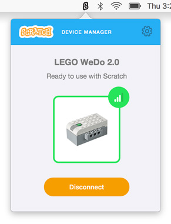

5. Pressione o botão WeDo
Agora, pressione o botão verde no WeDo. Ele deve começar a piscar, e depois emitir um som quando se conectar.
Ao realizar a conexão, o Gerenciador do dispositivo vai ficar assim:

Verifique se seu WeDo está ligado e próximo ao seu computador.